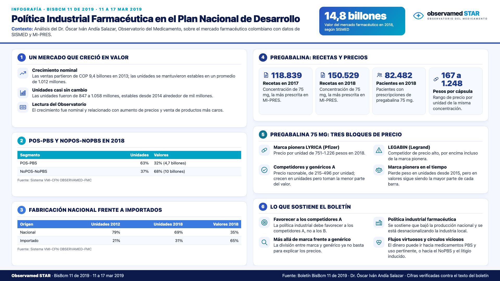

Política Industrial Farmacéutica en el Plan Nacional de Desarrollo
Observamed-FMC hizo referencia a que -de acuerdo con los reportes de los laboratorios al sistema de información de precios y ventas de medicamentos SISMED- el mercado farmacéutico creció de COP 9,4 billones el 2013 a COP 14,8 billones el 2018, mientras en unidades “diversas” se mantuvo estable en un promedio de 1.012 millones en el mismo período (2013 a 2018). Por lo tanto, si el número de unidades prácticamente no creció y en valores creció COP 5,4 billones, este crecimiento fue nominal y relacionado con aumento de precios y venta de productos más caros (ver gráfico N°1).

Las 6 tablas de esta edición · 41 filas en total
Gráfico N°1: Ventas Mercado Farmacéutico Colombia en unidades y valores
Es la prueba central de que el mercado creció solo por precio: las unidades vendidas apenas se mueven (847 a 1.058 millones, estables desde 2014 alrededor de mil millones), mientras los valores casi se duplican…
Gráfico N°2: Ventas medicamentos importados versus fabricación nacional
Muestra el debilitamiento de la industria nacional: en unidades, lo fabricado en Colombia baja del 79% en 2012 al 69% en 2018, mientras lo importado sube del 21% al 31%. En valores el importado ya domina con ce…
Gráfico N°3: Prescripciones de Pregabalina en MI-PRES 2017-2018
Usa los datos abiertos de MI-PRES para escoger un ejemplo representativo de NoPOS muy prescrito: la pregabalina 75 mg domina con mucha distancia (118.839 recetas en 2017 y 150.529 en 2018) y todas las concentra…
Gráfico N°4: Rangos de precios Pregabalina 75 mg según precio unitario PPPS
Es la evidencia de que la vieja división 'marca vs genérico' ya no basta: por el mismo principio activo en la misma concentración, el precio por cápsula va de 167 a 1.248 pesos. Se ven tres bloques: la marca pi…
Gráfico N°5: Rangos de precios Pregabalina 75 mg s/ precio unitario PPPS
Lleva los tres rangos de precio del gráfico N°4 a una serie de siete años. En unidades la marca pionera (rojo) pierde peso desde 2015 y crecen los competidores; pero en valores el rojo sigue siendo la mayor par…
Gráfico N°6: Flujos virtuosos y círculos viciosos en los recursos del sistema de salud
Resume el argumento político del boletín: el dinero de la salud puede ir por el camino virtuoso (flechas verdes hacia régimen subsidiado y contributivo, medicamentos PBS, patologías prevalentes y uso pertinente…